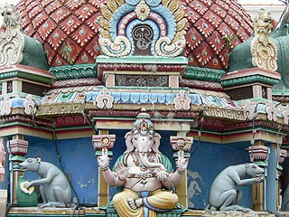
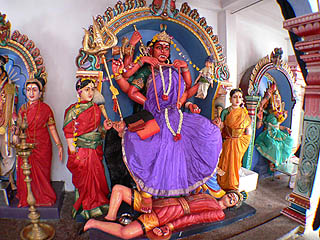

で、攻撃力10000の無敵っぷり。そこで暴れるのを防ぐべくダンナのシヴァ神がガンジーよろしく防御力0の状態でカミさんに踏まれるというシーン。
次のスポットへGO！
スリ・マリアマン寺院 SriMariammanTemple
中国系の人が多いシンガポールにおいてチャイナタウンとはこれ如何に？とお思いの方も多かろうと思うが、団地と芝生で出来ている都市国家シンガポールでは最大勢力の中国っぽさまでも珍しいという事になってしまうのであろうか？ リトルインディア同様、清潔で親切、なおかつ中国っぽいテーマパークみたいな中華街である。 で、その一画にあるスリ・マリアマン寺院。1827年の創建とシンガポール最古のヒンズー寺院。火渡りの行で有名だそうだ。チャイナタウンにヒンズー寺院とはこれ如何に？とお思いの方も多かろうと思うが、元々インド人も多く住んでいた場所だったらしい。ま、気にしないで下さい。
ここのは5層＋屋根になっている。ゴープラムの層の数は特にきまりとかはないのであろうか。 例によってこぼれ落ちそうな位神様がへばりついている。神様のインフレ状態を如実に表現した見事な宗教建築である。 中でも気になったのが下左写真中央の傘の下にいるお方。全身赤塗りですから。一体この神様、何がどうなって赤塗りなんでしょう。 肌の色が青とか赤とか緑とか、異教徒から見たら大変失礼だが宇宙人のようで、チョットびっくり。ま、傍から見たら金色のブッダを信仰するのとそう変わりはないのかもしれませんけど。 昼下がり、境内はガラーンとしている。 正面に3つある扉も閉まっていて中は確認出来ない。両脇のガードの方が良い感じで本尊を護っている。 武器は短剣に鞭にコブラに剣玉？危険きわまりないウェポンを装備してらっしゃる。 本堂の隣の祠には猿王ハマヌーンと像神ガネーシアが祭られていた。 これも黒塗りで眉間に黄色と赤の丸が描かれているので遠くから見たら一つ目小僧かと思っちゃいました。 柱の上には口が2つに割れた獅子が。チンコとか乳首とかいちいち付けないでもいいじゃないか！ 妙なリアリズムと変なデフォルメが渦巻き、地球が真っ二つに割れるんじゃないかと思う程の大袈裟な世界観を演出している。 天井には神様御一行様やチンコ丸出しの赤ちゃん神などが描かれている。 だからチンコリアリズムやめい！あっ、でもヒンズー教では宗教上結構大事なアイテムだからわざと見せているのか？ 本堂の片隅でお休み中の神様一座。こうしてみると顔色の悪い方が結構多いような・・・ 中には生首を持ったキュートなお方やさらし首にされているお方もいらっしゃる。さらし首はラーフという悪者。 本堂横の広場には仮設の屋根が架けられておりそこに大きな神像があった。大仏といっていい大きさだった。ハリボテだけど。 神様も営業時間外なのか正面にはカーテンがかけてあった。 そして足首には生首。ヒンズー教の方々は生首が結構お好きなようである。 神様が乗る動物なのだろうか。10円玉入れたら動きだしそうである。 タマネギ型の本堂の屋根にも様々な神様が乗っている。 インドの人口密度を如実に感じさせる濃密っぷりである。 
話はそれるが、ヒンズーの神様で私が一番見たかったのがカーリー神である。 シヴァ神の妻で怒りん坊。破壊の神である。でもインドでは大変人気があるらしい。 この破壊の女神は怒ると誰も手がつけられないほど殺戮しまくるそうだ。 で、攻撃力10000の無敵っぷり。そこで暴れるのを防ぐべくダンナのシヴァ神がガンジーよろしく防御力0の状態でカミさんに踏まれるというシーン。 これはヒンズーの仏具屋で買ったカーリー神のポスター。 刀と生首を持って大暴れ、しかも首からも杉良太郎のお札レイもビックリの生首レイ。 踏まれるシヴァ神も「ほ〜れ、もっと踏んで〜」てな具合。 この絵では今一つ迫力に欠けるが多くのカーリー神はトランス状態に近い超憤怒相である。 ヒンズーの神様の中でも最も恐ろしげな姿をしたカーリー神に私の珍寺アンテナがピク〜ンと反応。 どこかヒンズー寺院で立体的なカーリー神の彫像はないものかと探していたのだ。
で、ここの寺にありました。 本堂の左に何体か神様が並んでいる場所があったのだが、ここも営業時間外なのかカーテンがかかっていた。 そのカーテンの下の隙間から物凄く気持ち良さそうに踏まれているオヤジ発見！ これは、もしや！と思いカーテンを捲ると・・・いらっしゃいました。カーリー様。  紫の着物を御召しになっておられるのでカーリー神御自慢の生首レイは見られなかったが見事な怒りっぷり。 踏まれる方も見事ななされるがままっぷりである。でも、コレってシヴァ神なのか？もしかしてカーリーさん、間違って別の人踏んでないか？ 恐らく手に持っているのはどなたかのお腹から引っ張り出した腸と思われる。 この後、シヴァ神の捨て身の無抵抗主義は功を奏したのであろうか？怒りが静まるといいですね。 高層ビルとゴープラム。どこに行ってもビルだらけである。
次のスポットへGO！馬来半島珍寺伝説
珍寺大道場 HOME